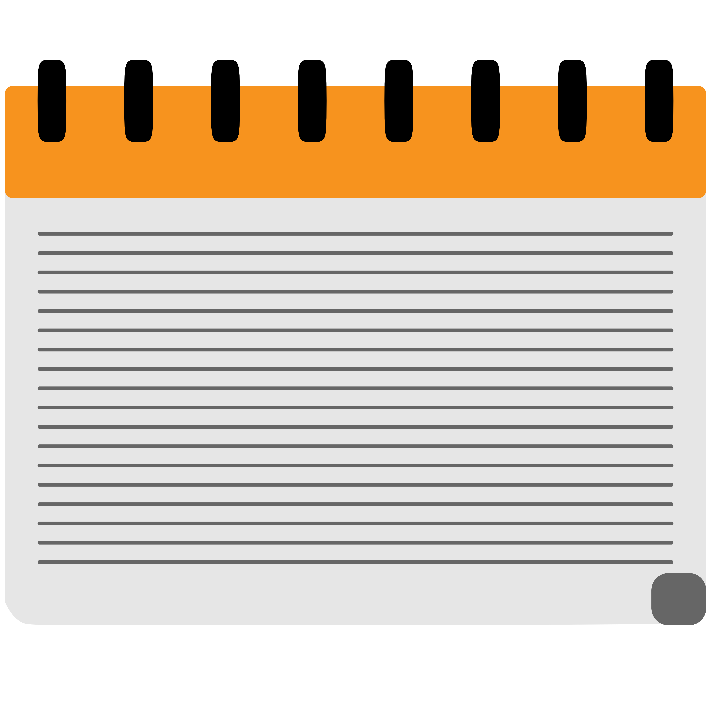

Projects Folder

About Me.txt
Contacts.app
Projects
Featured Work
Criminal Case Summarization System
Web platform built for PJ using specialized LLM agents.
Zero Waste Tracker App
Android app in Kotlin & MVVM to reduce food waste.
Veterinary Clinic Management
Java servlet application over a MySQL schema.